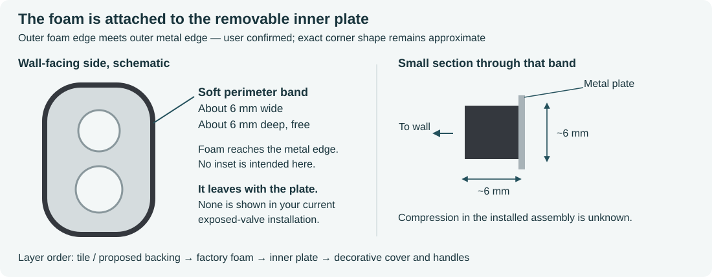
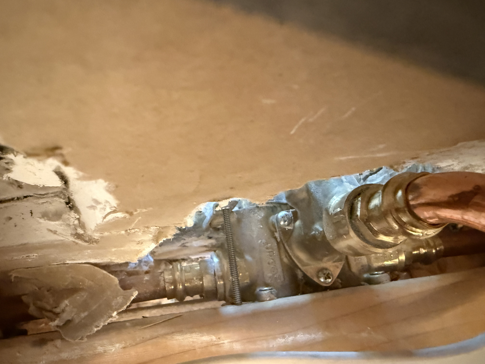
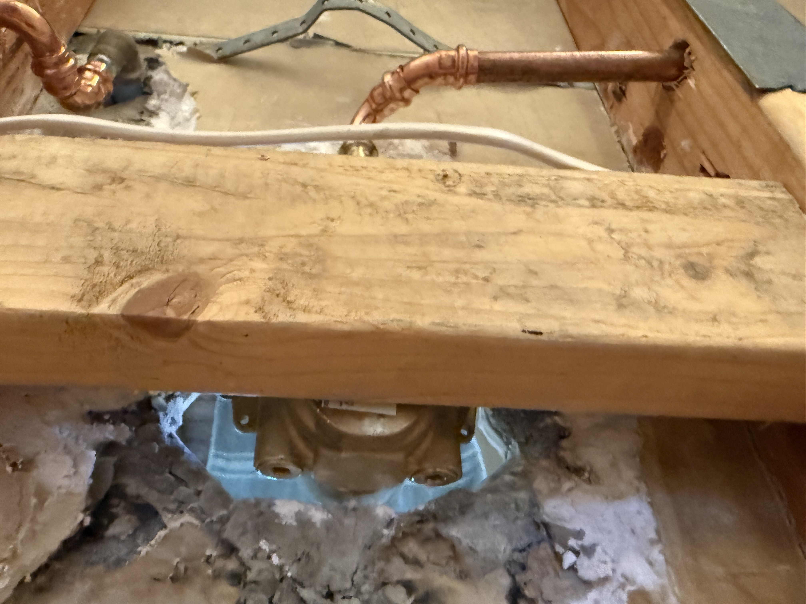

← Circular plate review
The rear installation, as photographed
No foam is installed at this stage
Your clarification is recorded: the valve is exposed and the foam-backed factory inner plate is removed.
The earlier approximately 6 mm foam thickness/width and 15.44 mm free overall depth describe that removed part.
Foam in an exploded or future assembly view belongs to its eventual reinstallation. It is not cavity filling.
See the gasket illustration and factory stud dimensions
What the foam looks like, and how long the rods are
The foam is a compressible strip around the wall-facing side of the removable inner plate.
Your approximate 6 × 6 mm measurements describe that strip. The 15.44 mm measurement includes the free foam and formed metal envelope.

Schematic only. The exact rear gasket footprint has not been photographed or traced. The stock part is
Kohler seal/front-plate assembly K-1035854.
Kohler's two-control exploded diagram, page 9 identifies it and the studs.
Factory stud: 4.56 inches long = approximately 115.8 mm
Kohler identifies K-1038645 as a 10-24 × 4.56 L stud.
This is its full nominal length. The installation guide, page 7
limits its installed projection from the original finished wall to 7/16 inch = 11.1 mm. The studs thread into the valve; wood is not their specified anchor.
Conditional estimate from the existing scan
All values below are millimeters. SW and NE are the lower-left and upper-right studs as viewed from the shower.
| Stud | Front tip beyond tile | Inferred rear tip behind tile | Inward travel to original 11.1 mm limit |
| SW | 26.6 | 89.2 | 15.5 |
|---|
| NE | 30.7 | 85.1 | 19.6 |
|---|
These figures assume uncut factory-length rods perpendicular to the tile, and the existing provisional scan scale/datum.
At the original-wall limit, a full-length rod would extend about 104.7 mm behind the tile.
The wood plane is unmeasured; the calculation cannot determine penetration. These are not pocket-drilling dimensions.
The added plate/bedding and actual gasket, nut, cover and handle fit still require a complete depth check.
Surface contact is the leading interpretation of the close-up
The visible rod appears to terminate at the wood surface. A shallow indentation or obscured hole cannot be excluded,
and the second stud's rear contact is not visible. The stock studs are machine-threaded trim hardware, not specified wood anchors.
To settle it without guessing, trace each front stud to its rear end and inspect the contact with a mirror or borescope at a grazing angle.
Look for the end face sitting on wood versus the shaft disappearing into a hole. A paper feeler passing underneath proves a gap;
failure to pass does not distinguish contact from penetration.
A dimensional cross-check is also possible once the actual rod length L is known: measure D, from its front tip to the near wood face along that same rod.
If D is approximately L, it touches; if D is less than L, the implied penetration is L − D; if D is greater, the gap is D − L.
The difference must exceed measurement uncertainty, and a cut or substituted rod invalidates using 115.8 mm for L.
Calculation and input hashes · manufacturer nominal data and conditional estimates only · no geometry or physical readiness changed.

The threaded rod appears to end at the wood surface. This supports the reported rear obstruction; the photograph does not trace both front trim studs or establish adjustment travel.
The wider view records the wood member, copper piping and nearby cable. Wood dimensions, function and clear drilling access are not established.Why the old rear view was misleading
The front Polycam capture contains visible surfaces, not a complete solid reconstruction of the plumbing and framing behind them.
Seeing its back faces—or the older simplified valve envelopes—does not reveal the real rear assembly.
The updated Blender review opens to these packed photographs. Its REAR01 | current front scan ONLY scene contains the preserved scan without factory trim, gasket or proposed parts.
The original proposal and exploded scenes remain available as references. The photos are unscaled boards, not a measured 3D registration.
Updated Blender review · Photo board
What the wood contact means
Kohler's trim studs thread into the valve. They do not obtain their trim retention by fastening into wood.
If their rear ends already bear on the wood, that contact could prevent sufficient inward adjustment.
Kohler installation guide, page 7.
A clearance pocket is an option to evaluate after tracing the same two studs and determining the required retraction, remaining thread engagement and the wood member's role.
The photos do not establish a pocket size or authorize choosing drilling over a suitable hardware correction. The nearby pipe and cable routes also need to be accounted for.
Moving a trim stud inward would not by itself change valve-body or handle-stem depth. The U-handle engagement and final gasket/cover seating checks remain separate.
REAR-001 revision 1 · received October 15, 2026 · photographs preserved byte-for-byte · no CAD dimensions or physical readiness changed.
Saved-file checks. No drilling, cutting, vendor upload or order performed.